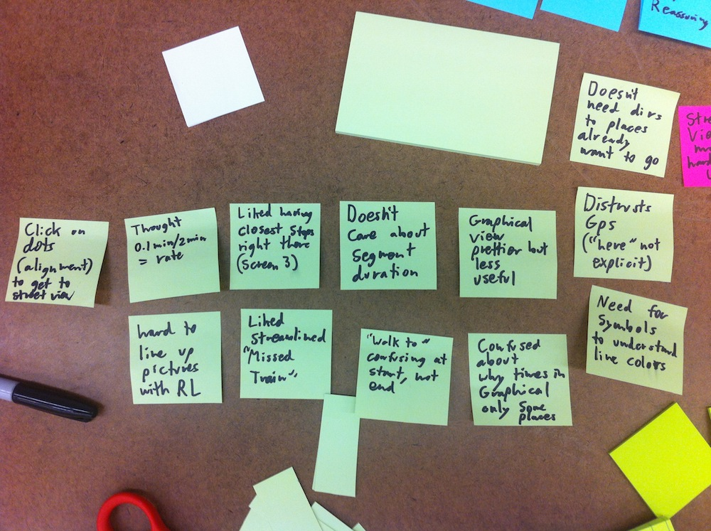
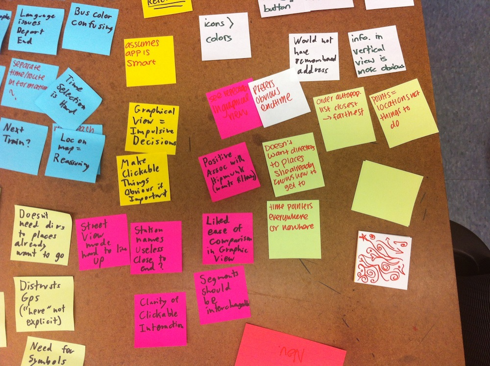
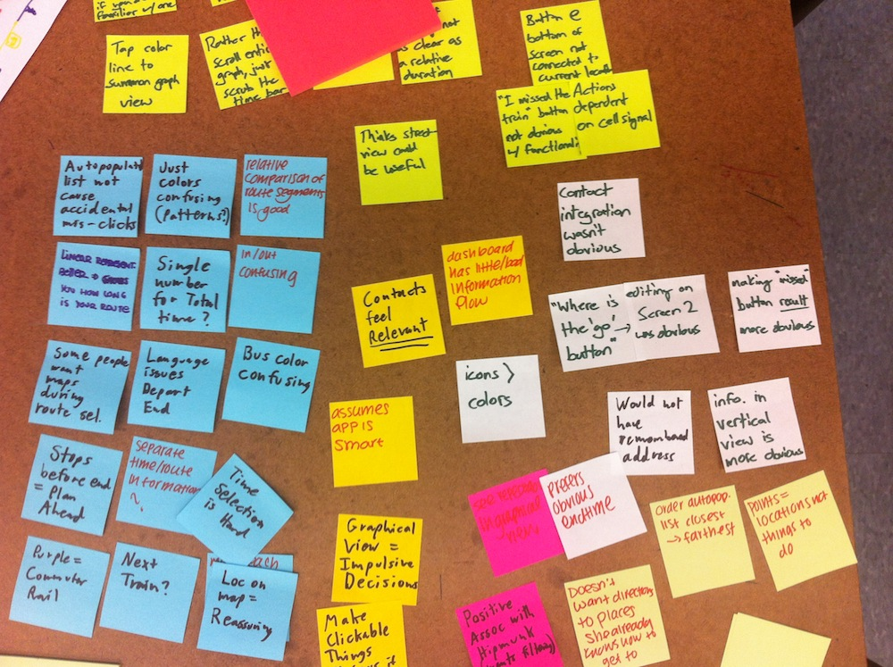
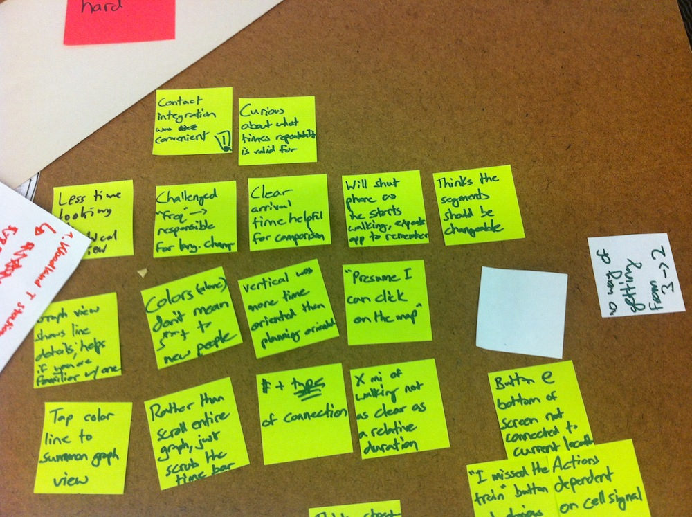

Introduction
Our team is developing an application to help new or inexperienced users of the MBTA better use and navigate the system. Using the insights we gained during the research phase of this project, we have constructed an early prototype of a possible application design. The purpose of this prototype is to allow us to evaluate the performance of the design in its current form through test sessions with potential users. There are design decisions we would like specific feedback on, in addition to whatever other insights our users can give us.
Prototype
Our design has a very limited number of separate screens that update based on user input and environmental context such as time, location, and live tracking data. As such, our prototype consists of a foamcore iPhone (larger than a real iPhone to make testing easier) and several low-resolution representations of screens a user might see as they go through a particular scenario. The philosophy behind our design is to provide multiple levels of information — brief interaction with the application will provide most-commonly accessed information whereas deeper interaction will show more. This philosophy was inspired by the tasks most commonly completed by our personas. For example, while Peter is very familiar with the train route from his apartment to his work, he needs to check on the status of the train and figure out when we has to head to the station. On the other hand, Henry & Elise need detailed directions of the entire route from their hotel to downtown Boston. Rather than separating these use cases at the top level, we structured the application so that the information Peter needs is available almost immediately whereas Henry & Elise can spend more time interacting with the application to get the information they need. We tried to make this information progression make sense rather than forcing users to "jump through hoops" by overemphasizing interaction.
Method
Unfortunately, very few of the individuals we met during the research phase responded to our follow-up emails. Consequently, most of our test participants were members of the Olin community who identified themselves as infrequent users of public transportation or users unfamiliar with the MBTA system — people with needs similar to Lilah's.
Since our variable-depth design is meant to sidestep the need for different users to complete different tasks, we focused on a single scenario broken down into the following steps:
- We tell each participant to imagine that there is a subway station near his/her apartment and that he/she has been invited to a party at a friend's house in Boston. We then ask them to use our application prototype to find out how to get there using public transportation.
- When the participant reaches the directions page (Screen 3), we ask them to describe to the observer/facilitator in plain language how they will get to the party.
- We notify the participant that the party has just been cancelled before he/she has had a chance to leave. We ask the participant is to re-route to a new location starting from the screen showing the route to the party.
- Public transportation seldom works on schedule. We ask the participant what he/she would do if he/she arrived at a bus stop just as the bus was leaving. Our design has a button specifically for this situation and we want to ensure that its functionality is clear.
- We ask the participant how he/she would determine where to go within a station in order to transfer from one train to another. Our prototype includes a Google Streetview-style representation of this journey which can be accessed by tapping on a specific station.
These questions were administered by a facilitator who also took notes during the test. Another team member acted as the computer and made additional observations (mentally) that were then compared and discussed after the test participant had left. In addition to the scenario completed by the participant, we asked the participant about the alternative versions of Screen 2 we had prepared. We also asked for feedback on the other screens.
Test Measures
Our observations were largely qualitative in nature. They relate to how long it took for participants to make a decision or navigate a page, the confidence with which participants described their actions and choices, whether they were able to correctly determine the functionality of the UI elements. We also gathered explicit feedback at the end of each test. While we handled each user test in small subteams, we shared our experiences with the entire team at the end of the project phase, allowing us to spot common feedback issues and rule out edge-case complaints.
We realize that we gathered little quantitative information during this phase, but the functionality of our design is largely dependent on contextually-added elements and the user’s progression through physical space during the journey, which limited the effectiveness of paper prototypes to some degree.
Results
The key insights and observations we made of our user tests are arranged by interface screen below. Insights that came up during multiple tests are highlighted with +X
Screen 1
- Testers liked the integration with their contact list, felt like search results were "relevant", "useful" +3
- Some testers' habits or mental models created confusion
- One tester changed the start point from their current location to the first place they were unfamiliar with, "don’t need directions to places I know how to get to"
- Replaced "Here" with actual address "since GPS data is not always accurate"
- "Where is the 'Go' button?"
Screen 2
- Colors are not as useful for determining transit types as symbols or icons – this effect is even worse when colors differ from the official MBTA colors. +2
- "Graphical view is prettier, but less useful"
- Far easier to quickly compare routes, figure out which one is shortest, which one has the least walking etc.+2
- Graphical view in current form lacks explicit presentation of information as seen in the textual view
- Frequency/repetition of routes
- "Important" times are displayed, others are hidden. +1
- Graphical view is better at presenting more of some types of information
- Showing the kind of transit, the type of connection, and the specific bus numbers were all liked by testers – helps them make more "informed" decisions in comparing routes +1
- In general, users were not convinced one view is currently better than the other.
- "I picked the first option because it was at the top of the list – I assume the app put it there for a reason"
Screen 3
- Users liked the layout of the directions page
- Showing only information needed to navigate the system
- Linear representation of train routes shows time, which is in fact more useful than seeing them geographically on a map
- Small maps embedded into directions help reassure users and provide them additional information to help them plan their next steps +2
- "Points on a line" are more than just points, they are physical places and mean a lot to users
- Certain wording was confusing, did not agree with the idea that "points are places"
- Testers assumed that points would reveal extra information when clicked
- Majority of testers liked seeing the 2 stops immediately before their transfer/destination – putting that information in the application is much better than assuming it’s on the train/bus +1
- Testers liked how the “I missed the train/bus” button was prominent and would keep them within the directions page (i.e. they would not have to re-start the whole application to re-route themselves) +2
- However, whilst some testers realized what it was for, they were unsure what the result of pressing it would be
- Also, placing it at the bottom of the screen makes it disconnected from the user’s current location or predicament
Screen 4
- Almost all testers expressed interest in the “Street-view” visuals, but felt that it would be more difficult to align a picture on a phone with their surroundings than to simply look for a sign.
General Observations
- Wording instructions is very challenging. Testers tended to input the information we gave them – in some tests we gave the participants the address of the place they were going, in others we only gave them the person’s name.
- Certain phrasing or language issues were also present in the interface. For example, one tester thought (x mi. / y min.) was a rate, not two separate pieces of information.
- One major limitation of the paper prototype was that "clickable" things were not always obviously "clickable"
- Some users make decisions based on availability of cell signal, assume app needs data. Others turn on Airplane Mode to conserve battery, hope app doesn’t need data
Discussion
The major changes we will be making to our design based on testing are:
1. Replace "Street View"
Testers generally found the “Street View” concept in screen 4 intriguing, but not useful.
We will investigate possible alternatives for providing additional information for specific steps, but will not pursue this particular implementation.
2. Refine Screen 2
By far the biggest uncertainty in our design is how the final version of screen 2 will look. Users generally seemed more impressed by the graphical view,
but expressed a desire for more information. It may be possible to incorporate this information into the graphical view, although we must be careful
not to clutter and confuse the display. Another idea would be to make it obvious that users could access the graphical view from within the text view,
e.g. click on the color-bar or rotate the display.
At this stage it is unclear precisely how we will refine screen 2, but feedback from the test sessions was helpful in identifying important elements of each representation.
3. Iron out the details
User testing highlighted many small details that we need to ensure are solved in the final design:
- Make sure "clickable" objects are obviously clickable
- Make sure the way items or options are ranked is obvious
- Use clear language
- Use logical icons and symbols; ensure that MBTA transit colors are reserved for the associated routes
As mentioned earlier, our design has certain features that were difficult to test in paper. This primarily includes modifying the size and arrangement of screens to make use of scrolling – tests gave positive feedback about scaling line segments by time, but this means short segments become very information dense and difficult to read. Lengthening the directions list would solve this, but we are not sure what impact scrolling will have on user perception.
We would also like to use MBTA GPS data to provide more accurate time information and show users' current locations on their journey, actions that are best tested as a user actually goes through their journey, not just sitting in a room in front of paper.
Overall, we were impressed at how much we were able to learn from a paper prototype – our test participants posed questions and made decisions that did and will continue to force us to refine our design further. It is clear that our next iteration will be a great improvement, but many other aspects will still need to be tested.
Appendices
Team Effort
The breakdown of team effort can be found here
Script
Our user test script contains the introductory briefing we gave each user, as well as the scenarios we asked them to walk through
Raw Data
A collection of sticky notes created during team de-briefing after all user tests were completed, highlighting the most important feedback we recieved.



